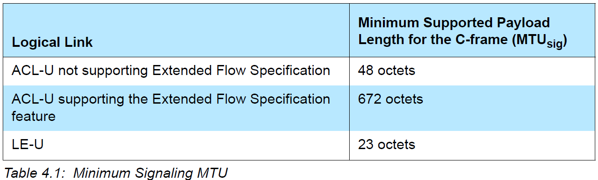
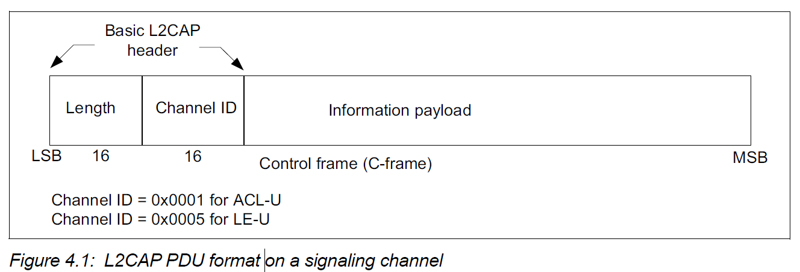
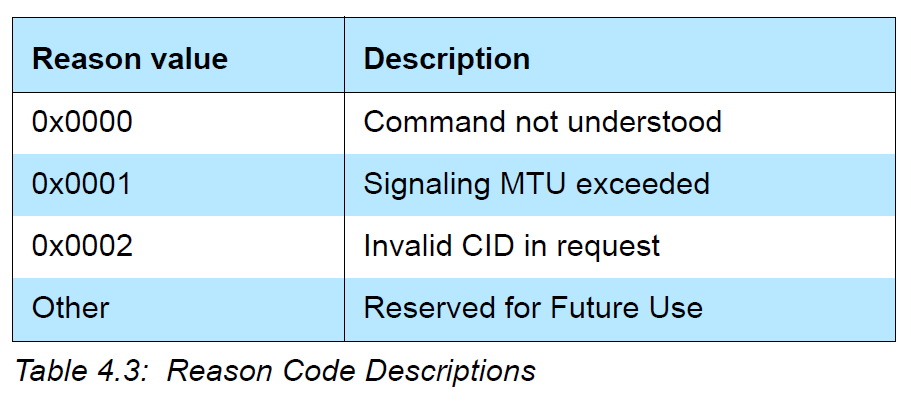
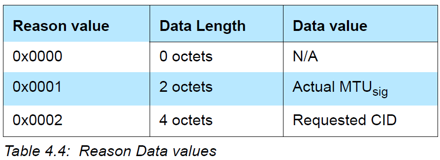
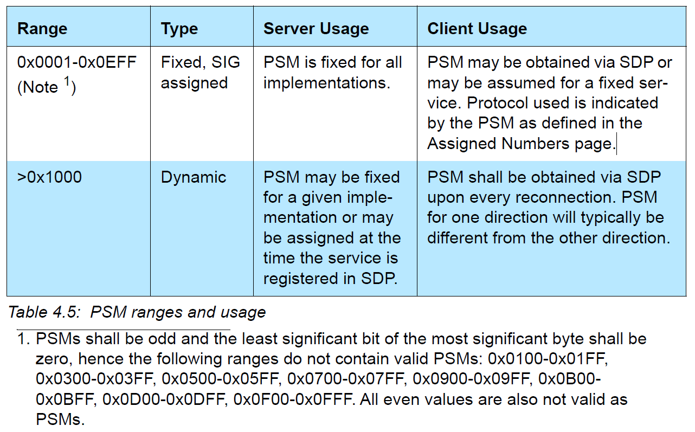
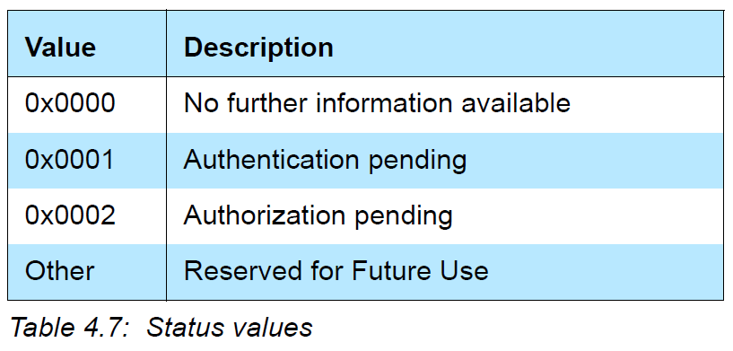
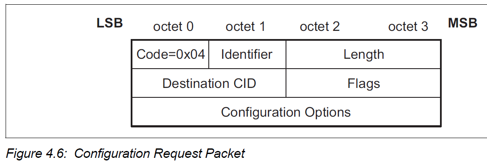
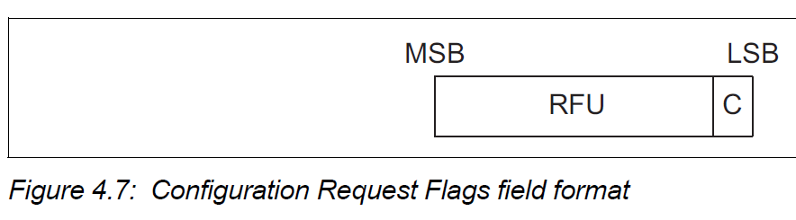
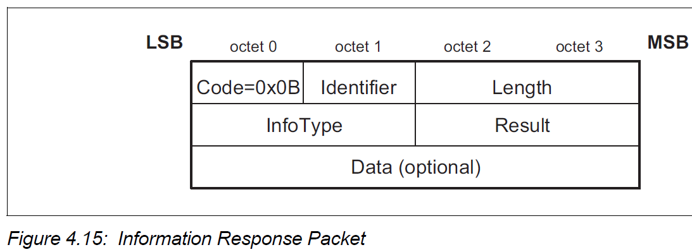
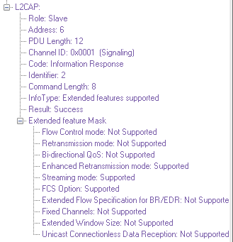

Signaling Packet Formats¶
All signaling commands are sent over a signaling channel.The signaling channel for managing channels over ACL-U logical links shall use CID 0x0001 and the signaling channel for managing channels over LE-U logical links shall use CID 0x0005.
All L2CAP implementations shall support the reception of C-frames(signaling commands) with a payload length that does not exceed the signaling MTU. L2CAP implementations should not use C-frames that exceed the MTUsig of the peer device. If a device receives a C-frame that exceeds its MTUsig then it shall send a Command Reject containing the supported MTU :sub: sig.
Multiple commands may be sent in a single C-frame over Fixed Channel CID 0x0001 while only one command per C-frame shall be sent over Fixed Channel CID 0x0005.
Commands take the form of Requests and Responses.
 The following shows the general format of all signaling commands:

The fields shown are:
Code (1 octet)
The Code field is one octet long and identifies the type of command.
Identifier (1 octet)
The Identifier field is one octet long and matches responses with requests. Within each signaling channel a different Identifier shall be used for each successive command.
Following the original transmission of an Identifier in a command, the Identifier may be recycled if all other Identifiers have subsequently been used.
RTX and ERTX timers are used to determine when the remote end point is not responding to signaling requests. On the expiration of a RTX or ERTX timer, the same identifier shall be used if a duplicate Request is re-sent.
A command response with an invalid identifier is silently discarded. Signaling identifier 0x00 is an illegal identifier and shall never be used in any command.
Length (2 octets)
The Length field is two octets long and indicates the size in octets of the data field of the command only.
Data (0 or more octets)
The Data field is variable in length. The Code field determines the format of the Data field. The length field determines the length of the data field.
COMMAND REJECT (CODE 0x01)¶
A Command Reject packet shall be sent in response to a command packet with an unknown command code or when sending the corresponding response is inappropriate.
When multiple commands are included in an L2CAP packet and the packet exceeds the signaling MTU (MTUsig) of the receiver, a single Command Reject packet shall be sent in response. The identifier shall match the first Request command in the L2CAP packet. If only Responses are recognized, the packet shall be silently discarded.

The data fields are:
Reason (2 octets)
Data (0 or more octets)
when reason code is 0x0002, the data field shall be 4 octets containing the local (first) and remote (second) channel endpoints. The remote endpoint is the source CID from the rejected command. The local endpoint is the destination CID from the rejected command.
CONNECTION REQUEST (CODE 0x02)¶
Connection request packets are sent to create an L2CAP channel between two devices. The L2CAP channel shall be established before configuration begins.

The data fields are:
Protocol/Service Multiplexer - PSM (2 octets (minimum))
The PSM field is at least two octets in length. All PSM values shall be ODD.
Source CID - SCID (2 octets)
The source CID is two octets in length and represents a channel endpoint on the device sending the request.
the Source CID represents the channel endpoint on the device sending the request and receiving the response.
CONNECTION RESPONSE (CODE 0x03)¶
When a device receives a Connection Request packet, it shall send a Connection Response packet.
Note
Implementations conforming to previous versions of this specification may respond with a Command Reject (Reason 0x0002 – Invalid CID In Request) packet under conditions now covered by result codes of 0x0006 and 0x0007.
The data fields are:
Destination Channel Identifier - DCID (2 octets)
This field contains the channel endpoint on the device sending this Response packet.
Source Channel Identifier - SCID (2 octets)
This field contains the channel endpoint on the device receiving this Response packet. This is copied from the SCID field of the connection request packet.
Result (2 octets)
The result field indicates the outcome of the connection request. The result value of 0x0000 indicates success while a non-zero value indicates the connection request failed or is pending.


Status (2 octets)
Only defined for Result = Pending. Indicates the status of the connection.

CONFIGURATION REQUEST (CODE 0x04)¶
Configuration Request packets are sent to establish an initial logical link transmission contract between two L2CAP entities and also to re-negotiate this contract whenever appropriate.
The only parameters that should be included in the Configuration Request packet are those that require different values than the default or previously agreed values.
If no parameters need to be negotiated or specified then no options shall be inserted and the continuation flag (C) shall be set to zero.
Even if all default values are acceptable, a Configuration Request packet with no options shall be sent.
The data fields are:
Destination CID - DCID (2 octets)
This field contains the channel endpoint on the device receiving this Request packet.
Flags (2 octets)
Only one flag is defined, the Continuation flag (C). When both L2CAP entities support the Extended Flow Specification option, the Continuation flag shall not be used and shall be set to zero in all Configuration Request and Response packets.
When used in the Configuration Request, the continuation flag indicates the responder should expect to receive multiple request packets. The responder shall reply to each Configuration Request packet.
The Configuration Request packet with the continuation flag cleared shall be treated as the Configuration Request event in the channel state machine.
The Configuration Response packet with the continuation flag set to zero shall be treated as the Configuration Response event in the channel state machine.
Other flags are reserved for future use.
Configuration Options
A list of the parameters and their values to be negotiated shall be provided in the Configuration Options field.
Note
Currently, only MTU is negotiated in most cases..
CONFIGURATION RESPONSE (CODE 0x05)¶
Configuration Response packets shall be sent in reply to Configuration Request packets except when the error condition is covered by a Command Reject response.
configurations related to traffic flowing from device A to device B is independent with the configuration related to traffic flowing from device B to device A.

The data fields are:
Source CID - SCID (2 octets)
This field contains the channel endpoint on the device receiving this Response packet.
Flags (2 octets)
the same as Configuration Request.
Result (2 octets)

DISCONNECTION REQUEST (CODE 0x06)¶
Terminating an L2CAP channel requires that a disconnection request be sent and acknowledged by a disconnection response.
The receiver shall ensure that both source and destination CIDs match before initiating a channel disconnection.
Once a Disconnection Request is issued, all incoming data in transit on this L2CAP channel shall be discarded and any new additional outgoing data shall be discarded. Once a disconnection request for a channel has been received, all data queued to be sent out on that channel shall be discarded.

The data fields are:
Destination CID - DCID (2 octets)
This field specifies the endpoint of the channel to be disconnected on the device receiving this request.
Source CID - SCID (2 octets)
This field specifies the endpoint of the channel to be disconnected on the device sending this request.
DISCONNECTION RESPONSE (CODE 0x07)¶
Disconnection responses shall be sent in response to each valid disconnection request.

The data fields are:
Destination CID - DCID (2 octets)
This field identifies the channel endpoint on the device sending the response.
Source CID - SCID (2 octets)
This field identifies the channel endpoint on the device receiving the response.
ECHO REQUEST (CODE 0x08)¶
Echo requests are used to request a response from a remote L2CAP entity. These requests may be used for testing the link or for passing vendor specific information using the optional data field. L2CAP entities shall respond to a valid Echo Request packet with an Echo Response packet. The Data field is optional and implementation specific. L2CAP entities should ignore the contents of this field if present.

ECHO RESPONSE (CODE 0x09)¶
An Echo response shall be sent upon receiving a valid Echo Request. The identifier in the response shall match the identifier sent in the Request. The optional and implementation specific data field may contain the contents of the data field in the Request, different data, or no data at all.

INFORMATION REQUEST (CODE 0x0A)¶
Information requests are used to request implementation specific information from a remote L2CAP entity.
It is optional to send Information Requests.

The data field is:
InfoType (2 octets)
The InfoType defines the type of implementation specific information being requested.


Information Request and Information Response shall not be used over Fixed Channel CID 0x0005.
Example:

INFORMATION RESPONSE (CODE 0x0B)¶
An information response shall be sent upon receiving a valid Information Request.
The data fields are:
InfoType (2 octets)
The InfoType defines the type of implementation specific information that was requested.
Result (2 octets)
The Result contains information about the success of the request.
Data (0 or more octets)
The contents of the Data field depends on the InfoType.

Example:
